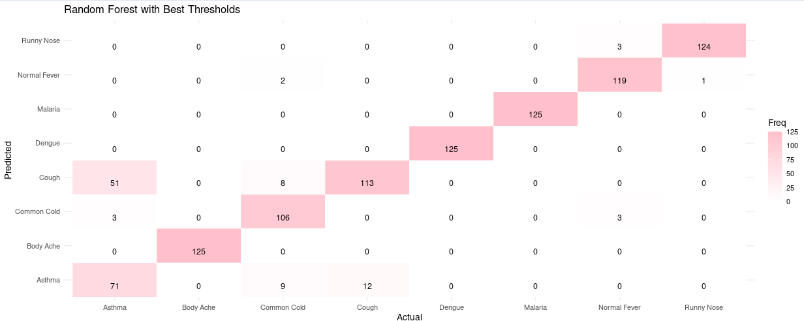

This project was developed as part of the OZNAL (Knowledge Discovery) course during my studies at FIIT STU. I worked on the project as a pair with my classmate Lenka ♡.
The goal of the project was to develop a multi-class classification system capable of diagnosing common diseases based on patient symptoms. Our solution was implemented as an interactive Shiny application in R, leveraging machine learning techniques to distinguish between eight different medical conditions: Asthma, Dengue, Malaria, Common Cold, Cough, Body Ache, Runny Nose, and Normal Fever.
The project evaluates whether a controlled set of basic symptoms - such as Fever, Headache, Cough, Fatigue, and Body Pain - is sufficient to accurately predict and distinguish between overlapping diagnoses in a clinical context.
I worked on the project across the entire machine learning workflow, from initial data exploration and literature review to model tuning and evaluation.
log1p(x).
We performed a power analysis confirming that our balanced dataset (625 samples per disease) heavily exceeded the standard guidelines for statistical
reliability.
mtry, ntree, nodesize, maxnodes) using the Macro F1 Score as the primary metric to ensure balanced class performance.
The video presents a walkthrough of the entire application. It showcases how data is processed, how the features are analyzed, and how the machine learning models generate predictions in real time. Additionally, the visualization presents the performance comparison between our models, displaying the confusion matrices and ROC curves for both the baseline Random Forest and XGBoost variations.
If you want to test the application yourself and explore its features firsthand, you can find the live link and interactive demo in the Links section at the bottom of this page.
This project gave me hands-on experience with the complete predictive modeling pipeline, highlighting that machine learning is as much about data understanding as it is about algorithms. I learned how to deal with non-linear class boundaries and how to critically evaluate models beyond simple accuracy.
The most valuable takeaway was understanding the real-world trade-offs in model evaluation. While the untuned Random Forest achieved the highest overall accuracy (93%), optimizing decision thresholds proved essential for shifting the balance between false positives and false negatives—a critical requirement in medical diagnostics where missing a condition can have severe consequences.